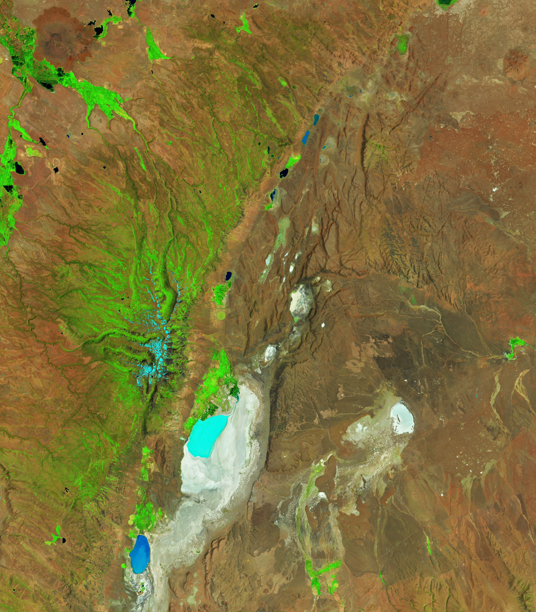

Whirling Dust and Ancient Floods
Dust devils are a common sight whirling across the Alvord Desert’s flat expanse. Dry for most of the year, this southeastern Oregon tract interests scientists studying these flighty vortices, which also occur on Mars and potentially elsewhere in the solar system. The playa and its dust originate from the most recent ice age, when a massive pluvial lake covered the area, leaving bright salt and mineral deposits and evidence of catastrophic flooding.
The images above, acquired with the OLI (Operational Land Imager) on Landsat 8 on June 29, 2025, show the Alvord Desert in false color (left) and natural color (right). The summit of Steens Mountain rises more than a vertical mile above the desert floor to the west, while a steep escarpment borders the playa on the east.
The false-color image (OLI bands 6-5-4) indicates some water was present in the desert at the time. The basin holds seasonal runoff from Steens Mountain and may also partially fill with rainfall. The last time it was flooded year-round was 1982–1985 due to unusually high mountain snowpack, according to the Bureau of Land Management. Alvord Lake, another shallow seasonal lake, is visible farther south.
A photo from the desert floor shows white, cracked mineral deposits and areas of tan sand in the foreground, with snowcapped mountains in the background. The photo was taken in the early morning, and wispy clouds appear pinkish.
In recent years, researchers have sought to understand dust devils by measuring meteorological conditions in the Alvord Desert. The convective vortices are powered by the Sun’s heating of the land surface, though the details of their drivers and inner workings remain somewhat mysterious.
Dust devils are limited to arid areas on Earth but are widespread—and sometimes much larger—on Mars. Dust lofted into the Martian atmosphere remains aloft for long periods and likely influences Martian climate. Dense atmospheric dust can reduce sunlight for solar-powered equipment, but strong dust devil winds can also help by cleaning solar panels, scientists note.
The Alvord Desert has not always shared these similarities with Mars. During the late Pleistocene epoch, approximately 40,000 to 12,000 years ago, Alvord Lake was one of many sprawling lakes filling the Basin and Range province. The ice-age lake may have been over 80 miles (130 km) long and up to 280 feet (85 m) deep.
Geologists have discovered evidence of at least one catastrophic outburst flood that shaped the landscape for tens of miles downstream. Around 13,000 years ago, the lake breached Big Sand Gap, releasing multiple cubic miles of water into the Coyote Lake basin and eventually into the Owyhee and Snake Rivers. Floodwaters carved canyons, scoured bedrock, and deposited boulders up to 100 feet (30 m) above present-day river channels. Large-scale “fill-and-spill” events like this shaped western North America during this period (for example, in Washington’s Channeled Scablands) due to numerous ice- or debris-dammed lakes.